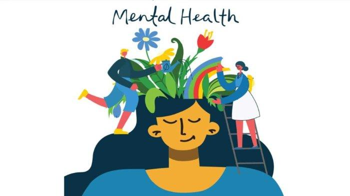
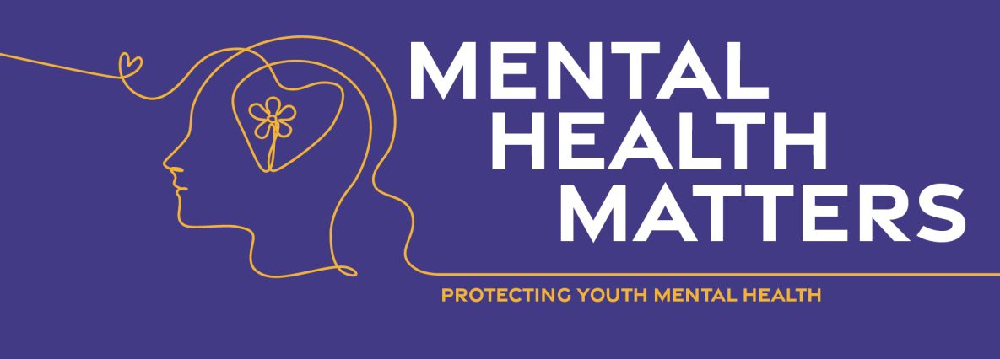

Kesehatan mental adalah kondisi kesejahteraan psikologis individu yang mencakup aspek-emosi, pikiran, dan perilaku mereka. Ini mencakup kemampuan seseorang untuk mengatasi stres, mengelola emosi, berinteraksi sosial, dan membuat keputusan. Kesehatan mental yang baik tidak hanya mencakup ketiadaan gangguan mental, tetapi juga mencakup kemampuan seseorang untuk berfungsi secara optimal dalam kehidupan sehari-hari.
